Inhalt Index DeskTop Bronstein

 Integraltransformationen Laplace-Transformation Rücktransformation in den Originalbereich Reihenentwicklungen
Integraltransformationen Laplace-Transformation Rücktransformation in den Originalbereich Reihenentwicklungen


Wenn F(p) in eine für | p | > R absolut konvergente Reihe der Form
| 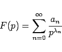 | (15.42) |
entwickelt werden kann, wobei die 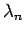 eine beliebig aufsteigende Zahlenfolge 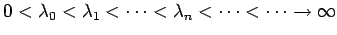 bilden, so ist eine gliedweise Rücktransformation möglich:
| 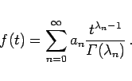 | (15.43) |
Mit  ist die Gammafunktion bezeichnet. Speziell erhält man für 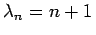, d.h. 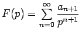, die Reihe 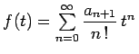, die für alle reellen und komplexen t konvergiert. Außerdem ist eine Abschätzung in der Form 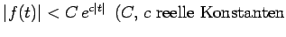) möglich.
ist die Gammafunktion bezeichnet. Speziell erhält man für 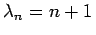, d.h. 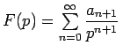, die Reihe 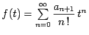, die für alle reellen und komplexen t konvergiert. Außerdem ist eine Abschätzung in der Form 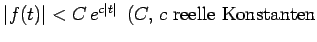) möglich.
| Beispiel |
|
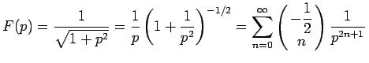. |